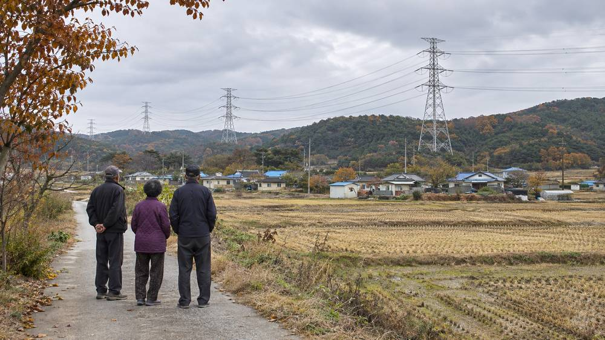

송전선로 입지선정에 주민 참관·대안 제안 허용, 12월 1일까지 입법예고

한전 새만금~신서산 345kV 선로는 2034년 12월 준공 목표…시군구 설명회 2회에서 3회로
기후에너지환경부가 10월 21일 송·변전설비 입지선정위원회(선로 후보 경과지를 논의하는 기구) 구성·운영 기준 일부개정안을 내놓고, 10월 22일부터 12월 1일까지 입법예고했다. 위원회를 꾸리기 전에 여는 시군구 단위 주민설명회는 기존 2회에서 3회로 늘어난다. 주민의 회의 참관은 원칙적으로 허용하고, 개인정보를 뺀 회의자료를 공개한다. 후보 입지는 원칙적으로 2개 이상 비교하며, 주민은 대안 경과지나 부지를 서면으로 제안할 수 있다.
새만금에서 충남 서산 신서산변전소까지 345kV 송전선로를 놓는 한국전력은 2034년 12월 준공을 목표로 하고 있다. 후보 경과지는 8월에 공개됐고 아직 확정되지 않았다. 입지선정위원회 임기는 12월에 끝나며, 그때까지 노선을 정하지 못하면 한전과 외부 전문가가 참여하는 별도 위원회가 절차를 이어 간다고 한전은 밝혔다. 이번 개정안이 이 선로의 위원회에 적용되는 시점은 공개된 자료에서 확인되지 않았다.
경과 지방정부 지원금은 가공선로 1km당 20억 원이다. 기후부는 이 가운데 3분의 2 이내를 송·변전설비 주변지역에 배분한다고 발표했다. 마을이 태양광 사업을 하면 설치비용을 우선 반영한다(이른바 '햇빛소득' 지원이다). 이재식 기후부 전력망정책관은 주변 주민이 마을 태양광 발전수익을 나누고 사업 초기부터 입지선정에 참여하도록 제도를 고치겠다고 밝혔다. 입법예고 의견 제출 기한은 12월 1일이다.
출처: 뉴스클레임 2026-11-14 뉴스클레임 논설위원실(사설) 원문 보기
출처: 기후에너지환경부 2026-10-21 송전망 주변마을 '햇빛소득' 지원 및 입지선정 주민참여 확대 원문 보기
출처: 오마이뉴스 2026-09-17 한전 "연말까지 경과지 못 정하면 별도 위원회"…송전선로 절차 계속 원문 보기